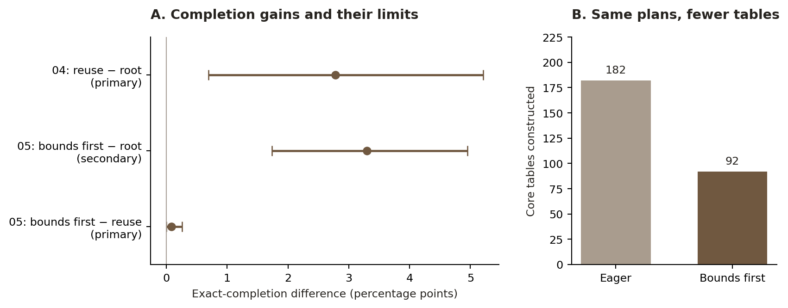

Geometric Cores and Exceptions in Subset Sum
Abstract. Can a subset-sum instance be solved more cheaply by representing most weights in a narrow geometric core and enumerating a few exceptions? We implement an exact route that discovers a decomposition \(w_i=Mp_i+r_i\), removes a bounded number of large residuals, and reuses one two-coordinate dynamic-programming table across exceptional assignments. In a locally frozen study of 576 fresh targets, the route completes 469 decisions under the declared work cap, versus 453 for matched root geometry: a net gain of 16 with conditional whole-list-bootstrap 95% interval [4.00, 30.02]. A second frozen study of 1,152 fresh targets obtains 954 versus 916 root completions. Its primary incremental comparison with previous reuse is only 1 completion, with interval [0.00, 3.00]. A matched ablation explains a smaller efficiency gain: necessary bounds avoid 90 of 182 table constructions; faster discovery and delayed construction together reduce capped work by 1.74%. We prove correctness, safe truncation and the conditional construction saving. All online acquisition and verification are charged. The result is an exact structural improvement on the declared constructed mixture, without a new general worst-case bound or a demonstrated incremental wall-clock speedup from the final refinement.
From predicted solvability to an executable route
Note I asks whether certified representations or exclusions can account for enough of an exponential search space that the residual becomes affordable. Notes V and VI turn this into a core-and-exceptions program: find an exactly queryable core, enumerate the exceptions, and charge discovery and checking. The earlier prediction work also exposes a practical limitation. A classifier can select an existing route; improving its input geometry does not by itself supply a missing exact solver.
This note develops such a route. The motivating inspected failures included large-base weights whose residuals were mostly small, with a few items making an otherwise compact aggregate representation unaffordable. Those failures informed the design. They are not counted as fresh confirmation. Two subsequent source/configuration freezes precede two new samples, with prior normalized lists excluded.
The main empirical result is improved paid exact completion over the matched original root-geometry portfolio. The main mechanism is an explicit, auditable representation: one exact table serves many shifted targets. The later bounds-first experiment separates this route’s useful exact queries from table construction that was unnecessary. No ML is fitted in either solver experiment.
Aggregate geometry and a bounded exceptional set
Consider positive integer weights and an integer target. Apply exact range, complement, exclusion, forcing and gcd reductions, retaining the information needed to lift witnesses. For an unresolved normalized kernel \(u_1,\ldots,u_n\) and target \(T\), discover a base \(M\ge2\) and write \[u_i=Mp_i+r_i,\qquad p_i=\left\lfloor\frac{u_i+\lfloor M/2\rfloor}{M}\right\rfloor\ge0.\] The residuals may be negative. The detector uses at most 24 data-only candidates: observed minimum/median weights, nearby powers of two, and large observed gaps divided by small integers. It receives neither a planted base nor an outlier or family label. It selects one projection by its fixed aggregate-range/history score.
Split the indices into core \(C\) and exceptions \(E\), with \(m=|C|\) and \(k=|E|\). The implementation ranks decreasing \(|r_i|\), breaking ties by kernel index, and considers removing the first \(0,1,\ldots,9\) items. It accepts the first partition meeting fixed storage and work gates. This is a constructive heuristic, not a minimum deletion distance; discovery can fail even when another useful partition exists.
For an exceptional subset \(A\subseteq E\), define the shifted core target and residual strip by \[z_A=T-\sum_{i\in A}u_i,\qquad R_-=\sum_{i\in C}\min(0,r_i),\quad R_+=\sum_{i\in C}\max(0,r_i).\] Any core selection has coordinates \(q=\sum_{i\in C}p_ix_i\) and \(s=\sum_{i\in C}r_ix_i\). It solves the shifted problem exactly when \(Mq+s=z_A\).
Proposition 1 (one safe quotient cap). Every core selection solving any shifted target lies in \[0\le q\le Q=\min\left(\sum_{i\in C}p_i, \left\lfloor\frac{T-R_-}{M}\right\rfloor\right), \qquad R_-\le s\le R_+.\] Proof. Positive exceptional weights imply \(z_A\le T\). Since \(s\ge R_-\), the identity \(Mq=z_A-s\) gives \(Mq\le T-R_-\). Nonnegative quotients bound \(q\) by their core total. The residual strip contains every subset residual, including every prefix residual. These bounds hold for all \(A\), so a single capped core representation suffices. \(\square\)
One exact table, reused across shifted targets
Set \(H=Q+1\) and \(W=R_+-R_-+1\). For a fixed order of core items, maintain reachable pairs \[S_0=\{(0,0)\},\qquad S_j=S_{j-1}\cup\{(q+p_j,s+r_j):(q,s)\in S_{j-1}\},\] restricted to \(0\le q\le Q\) and \(R_-\le s\le R_+\). Store each quotient row as a residual bitset offset by \(-R_-\). Update rows in descending quotient order. If \(p_j=0\), each row reads its pre-update value once, so the item is still used at most once. Retain prefix rows for witness reconstruction.
Proposition 2 (exact reuse). After full construction, membership in \(S_m\) answers every required shifted core query exactly. Exhausting all exceptional subsets with no successful membership proves NO; a successful membership yields an indexed witness.
Proof. The recurrence is the ordinary include/exclude induction, with an extra coordinate. Discarding \(q>Q\) is safe because later quotients are nonnegative. Every prefix residual belongs to the full core strip, so residual clipping removes no attainable prefix. Proposition 1 retains every pair that can solve a shifted target. Every original subset has exactly one exceptional part \(A\) and one core part; querying all \(A\) therefore covers all possibilities. Walk backward through prefix tables: omit the current item when the required pair was already reachable, otherwise include it and subtract its two coordinates. Combine with \(A\), lift the reductions, and verify the original weighted sum. \(\square\)
For each shifted target, only quotient values in \[\ell(z)=\max\left(0,\left\lceil\frac{z-R_+}{M}\right\rceil\right) \le q\le h(z)=\min\left(Q,\left\lfloor\frac{z-R_-}{M}\right\rfloor\right)\] can work. Membership tests use \((q,z-Mq)\). Gray-code enumeration updates the exceptional sum by one signed item change per assignment. At most \[G=\min\left(H,\left\lfloor\frac{W-1}{M}\right\rfloor+1\right)\] quotients need testing for one assignment. The exponential enumeration is in \(k\), rather than in the full number of items. Rebuilding the core for every shifted target would repeat the largest shared computation.
An interrupted table, enumeration or witness check returns unresolved. The implemented portfolio only returns an accepted exact decision after its required checks and final deadline check. A completed NO may come from preprocessing, necessary bounds, a complete core check, or the existing exact fallback; a failed heuristic never supplies a NO certificate.
Bounds before construction
Let \(U_C=\sum_{i\in C}u_i\). Reject an exceptional assignment immediately when \(z_A\notin[0,U_C]\) or \(\ell(z_A)>h(z_A)\).
Proposition 3 (a table-free NO). If every exceptional assignment is rejected by these necessary conditions, the original instance is NO without constructing \(S_m\).
Proof. A positive-weight core cannot attain a target outside \([0,U_C]\). Inside that range, every solution requires an integer quotient in \([\ell,h]\). An empty interval excludes that exceptional assignment. Exhausting all assignments excludes every original subset. \(\square\)
A nonempty interval is only necessary. For example, with \(M=100\), core weights \((101,203)\) have pairs \((0,0),(1,1),(2,3),(3,4)\); let the exception be \(149\). Target \(260\) is rejected for both exceptional choices without a table. Target \(252\) survives bounds after selecting \(149\): \(z=103\) allows \(q=1,s=3\), but that core pair is unreachable. Exact membership proves NO. Target \(250\) instead gives the reachable pair \((1,1)\) and witness \(101+149\). Bounds-only cannot replace exact reachability.
The bounds-first route constructs the table lazily, upon the first surviving assignment, and reuses it thereafter. It never constructs a second table.
Algorithm: bounds-first exception-core solving.
Reduce the target exactly; reuse the five existing tractable-core queries.
Discover a projection; try the original root bounds/DP when eligible.
Find an affordable core/exception partition using capped discovery.
Enumerate exceptional subsets. Reject empty range/quotient intervals.
On the first surviving assignment, build one exact core table. Query the surviving pairs; reconstruct and verify any witness.
Certify NO only after exhaustive rejection/querying. On an unavailable plan or interrupted route, spend the remaining allowance on the shared exact fallback.
What the cost identity does and does not prove
Let \(F\) include acquisition/discovery, \(B\) bound/enumeration work per assignment, \(D\) one complete table construction, \(N_Q\) the number of point queries, \(Q_{\rm pt}\) their cost, and \(V\) reconstruction/verification. If \(I\) indicates that at least one assignment survives bounds, an accounting envelope is \[C\le F+2^kB+I D+N_QQ_{\rm pt}+V,\qquad N_Q\le2^kG.\] For an identical fixed plan/order with sufficient resources to finish, eager and lazy construction inspect the same necessary bounds and point queries. Their isolated construction-cost difference is \[C_{\rm eager}-C_{\rm lazy}=(1-I)D\ge0.\] The identity saves construction only when all assignments are excluded by bounds. It does not guarantee a better portfolio completion count: discovery can consume fallback budget, different gates can select different plans, and cooperative deadlines change which calls finish. The fast-eager control below holds discovery and the plan fixed to isolate the identity.
The table has \(HW\) logical bit positions; complete prefix history is bounded by \((m+1)HW\) positions plus row/reference overhead. With machine-word width \(\omega\), bitset row updates have width-dependent cost, roughly \(O(\lceil W/\omega\rceil)\) word operations rather than unit cost. A conservative construction estimate is \(O((m+1)H(1+\lceil W/\omega\rceil))\), with analogous prefix-storage accounting. Python point tests using shifts can also depend on bit width. Reported work counters charge row updates, reference copies and queries but are heterogeneous units, not uniform bit operations.
As an elementary sufficient regime, if discovery and these core costs are polynomial in binary input length \(L\) and \(k=O(\log L)\), the exact route takes polynomial bit time. This follows from the established exception-to-core principle of Notes V–VI. No bound here makes \(H,W\) or \(k\) small for arbitrary binary subset-sum instances, or guarantees that this detector finds a good core.
Two frozen fresh-input studies
Both studies use sixteen constructed families, sizes \(n=24,30,36\), and three targets per weight list: planted, unconditioned middle-range, and fractional-band (or a fixed central target when no planted base exists). Study 04 has 192 lists / 576 targets; Study 05 doubles the lists to 384 / 1,152 targets. Their seeds are respectively 790281028 and 800281028. They exclude 2,052 and 2,244 previous normalized sorted-list signatures, respectively, plus within-study duplicates. Acceptance never depends on truth or solver completion.
The primary allowance is \(32L\), with the inherited self-delimiting encoding proxy \[L=2\operatorname{bits}(n)+1+ \sum_i(2\operatorname{bits}(w_i)+1)+2\operatorname{bits}(|t|)+2,\] where \(\operatorname{bits}(0)=0\). This budget is a declared counter schedule, not a complexity-model claim. All policies pay exact reductions, the original 15-feature acquisition and five existing zero-deletion core queries. Geometry policies share blind discovery, original root checking, and the same bitset/DFS/MITM fallback. The direct-MITM control skips geometry and gives its fallback allowance to MITM. No learned inference or additive-doubling acquisition is charged because these policies use neither.
Fixed route gates permit \(HW\le2{,}000{,}000\), prefix history at most \(64{,}000{,}000\) logical bits, and \(k\le9\). Execution receives at most 60,000 work units and three quarters of remaining work. Original root checking has a 12,000-unit cap and at most four candidate quotients; ordinary fallback keeps its 32,768-state / one-million-bit caps. Study 05 maintains residual/quotient totals incrementally, defers detailed estimates until storage gates pass, and caps partition discovery at \(\min(1024,\lfloor\text{remaining}/16\rfloor)\) units.
Independent half enumeration supplies exact truths offline. All returned witnesses, phase charges and caps are checked. Each study also measures a separate 20ms endpoint under the work cap in three randomized case/policy orders. Late outer calls are excluded. These repeats share the same inputs and are not independent samples. Whole-list bootstraps retain the three dependent targets together: 2,000 draws in Study 04 and 4,000 in Study 05. Intervals condition on the fixed methods and generated mixture; secondary comparisons are unadjusted exploratory evidence.
| Study | Policy | Exact / targets | Capped work | Live 20ms [range] |
|---|---|---|---|---|
| 04 | Lean, no geometry | 434/576 | 16,798,497 | 356 [353,356] |
| 04 | Root geometry | 453/576 | 14,421,224 | 407 [402,408] |
| 04 | Discovery only | 450/576 | 14,664,555 | 407 [404,408] |
| 04 | Exception-core reuse | 469/576 | 13,098,104 | 440 [434,440] |
| 04 | Direct MITM | 412/576 | 16,292,072 | 358 [357,362] |
| 05 | Root geometry | 916/1152 | 28,582,458 | 836 [823,836] |
| 05 | Exception-core reuse | 953/1152 | 26,463,413 | 896 [884,898] |
| 05 | Bounds only | 933/1152 | 27,494,127 | 862 [846,862] |
| 05 | Bounds first + reuse | 954/1152 | 26,002,456 | 897 [889,897] |
| 05 | Fast discovery, eager table | 954/1152 | 26,122,175 | 894 [884,898] |
The original route gain. Study 04’s locally frozen primary is reuse minus root: 469 versus 453, a net \(+16\) exact completions, interval [4.00, 30.02]. There are 19 gains and three losses. Discovery-only completes 450 versus root’s 453; the three lost cases have no affordable new plan and lose a fallback answer to discovery overhead. This isolates a real acquisition cost.
Study 05 supports the wider route on another fresh sample: bounds-first completes 954 versus root’s 916, a net \(+38\) with exploratory interval [20.00, 57.03]. There are 39 gains and one root-only completion; the latter is a near-equal NO with no affordable plan. The original reuse policy already completes 953 targets. These are distinct studies with distinct endpoints and denominators; their gains are not pooled into a single primary statistic.
The incremental refinement is smaller. Study 05’s primary is bounds-first minus previous reuse: 1 additional completion, interval [0.00, 3.00], with one gain and no loss. It does not establish a reliable incremental completion improvement. Capped work, which charges each unresolved run its full allowance, falls by 460,957 units (1.74%). Its exploratory interval is approximately [371,704, 566,671] units. Actual work falls from 25,735,033 to 25,218,397; this 2.01% is not a CPU-speedup estimate and mixes slightly different completion sets.

Ablation, regressions and remaining failures
| Policy | Core calls | Tables built | Point queries | Discovery work |
|---|---|---|---|---|
| Exception-core reuse | 182 | 182 | 100 | 875,473 |
| Bounds only | 182 | 0 | 0 | 249,587 |
| Fast discovery, eager table | 182 | 182 | 100 | 249,587 |
| Bounds first + reuse | 182 | 92 | 100 | 249,587 |
The matched fast-eager and bounds-first controls both complete 954 targets. Bounds-first avoids 90 of 182 tables (49.5%) and saves 119,719 capped-work units against fast-eager, with exploratory interval approximately [47,781, 219,337]. Every omitted table corresponds to a complete bounds-only NO; those constructions were unnecessary for those decisions. Both controls make the same 100 point queries. The surviving 92 table calls retain exact reachability when necessary.
Bounds-only completes 933 targets, versus 954 with the table available: 21 additional exact decisions, interval [12,31]. This control uses the same DP-affordability gates and stops unresolved at its first interval-feasible assignment. It is an attribution control, not an independently optimized unrestricted bounds solver. Fast-eager ties bounds-first on completion, so the one additional answer over previous reuse comes from discovery changes rather than lazy construction. Discovery work falls from 875,473 to 249,587 units.
The improvement has recognizable structure. In Study 04, many-outlier large-base cases improve from 22 to 34 of 36 targets; near-equal cases improve 20 to 25. In Study 05, many-outlier cases improve from root’s 45 to 66 of 72, and near-equal cases from 56 to 68. The three old acquisition regressions are all recovered by the faster-discovery policies in an explicitly retrospective replay. The earlier 115 inspected failures yield 25 repairs from core reuse versus 15 from direct MITM, also retrospective. Neither diagnostic is added to fresh counts.
At the separate live endpoint, Study 04’s medians are 407 root versus 440 reuse completions. Study 05’s medians are 896 previous reuse versus 897 bounds-first, with overlapping ranges; the final refinement establishes no clear further wall-clock advantage. Deadlines are cooperative: recorded maximum outer overshoots in Study 05 are approximately 52.1ms for previous reuse, 1.81ms for bounds-first and 61.4ms for root, and all late answers are excluded. These maxima do not imply hard latency guarantees.
The new route does not dominate every policy or budget. In Study 04’s earlier-family shared pools, lean search remains better at the 50% nominal allowance (334 versus reuse’s 332); direct MITM is better at 20% (median 165 versus 136). On Study 05’s 198 remaining unresolved targets, two-scale and two-progression families account for 88, random-wide for 48 and filtered-modular for 34. These are descriptive failure concentrations, not intrinsic-hardness certificates. A materially wider completion gain needs additional routes and stronger comparisons, not just further avoided table construction.
Relation to the literature and the research program
The decomposition \(Mp+r\) has a direct precedent in decomposable knapsack: Krishnamoorthy and Pataki study conditions under which ordinary variable branching is difficult and aggregate branching or lattice reformulation is effective [1]. Their solver-specific statements do not imply that every generated large-base case here satisfies their hypotheses. Our signed coordinate DP and bounded exceptional enumeration are an elementary exact implementation inspired by that geometry, not a new general reformulation theorem.
Meet-in-the-middle is a standard exact baseline [2]. Numeric density and additive structure support other algorithms: Bringmann and Wellnitz give a dense-regime parameter dichotomy [3]; Randolph and Węgrzycki study bounded additive doubling [4]. These results motivate possible additional routes, but a density feature or doubling estimate is not a cheap universal solvability certificate. We do not implement or claim superiority over those algorithms.
The specific contribution is a scoped, reproducible exact route that pays for discovery and improves budgeted completion over its matched root portfolio on fresh constructed inputs. The bounds-first ablation then identifies which part of the exact representation can be skipped. Notes I, V and VI supply the general coverage and exception-to-core principles [5], [6], [7]; this note supplies an executable geometric instance and measured positive evidence. It establishes neither a new worst-case subset-sum bound nor general state-of-the-art superiority. Larger sizes, independent machines and stronger tuned portfolios remain necessary for broader claims.
Reproducibility
All experiments, seeds, protocols, raw inputs, witnesses, counter/live traces and pre-generation source snapshots are retained under Structural_Geometry_Subset_Sum/results/04_exception_core_20261028 and 05_bounds_first_20261028. Their successful independent audits check source/input/artifact hashes, exact truths, partitions, witness recovery, complete bounds certificates and deterministic replays. Study 04 audits 2,880 fresh counter runs, 8,640 live records, 60 work pools and 345 retrospective calls. Study 05 audits 5,760 fresh counter runs, 17,280 live records and 15 retrospective calls.
The manuscript generator verifies the saved freezes and artifact manifests, checks table counts against raw counter runs, and creates the tables, values, figure and paper_evidence.json. It performs no solver reruns, training, new timing trials or new bootstrap. Rebuild the note with python build_papers.py –paper 7; run the study audit commands documented with the saved evidence for full independent replay. The working draft and its generated assets are separate from the frozen experiments.
References
B. Krishnamoorthy and G. Pataki. Column basis reduction, and decomposable knapsack problems. Discrete Optimization 6(3), 242–270, 2009. https://arxiv.org/abs/0807.1317.
E. Horowitz and S. Sahni. Computing partitions with applications to the knapsack problem. Journal of the ACM 21(2), 277–292, 1974. https://doi.org/10.1145/321812.321823.
K. Bringmann and P. Wellnitz. On near-linear-time algorithms for dense subset sum. SODA, 2021. https://arxiv.org/abs/2010.09096.
T. Randolph and K. Węgrzycki. Parameterized algorithms on integer sets with small doubling: Integer Programming, Subset Sum and k-SUM. ESA, 96:1–96:19, 2024. https://doi.org/10.4230/LIPIcs.ESA.2024.96.
J. R. Landers. Certified Coverage of Exponential Search Spaces. Companion note I, 2026. Series manuscript.
J. R. Landers. How Far from Easy? Structural Distance in Subset Sum. Companion note V, working draft, 2026. Series manuscript.
J. R. Landers. Predicting Subset-Sum Completion: The Value and Cost of Structural Features. Companion note VI, 2026. Series manuscript.